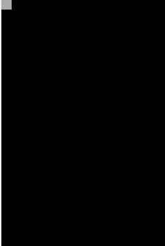

Shapeをシーンに表示する
phina.jsのオブジェクトの基本形であるShapeを画面に表示します。
var shape = Shape().addChildTo(this);
- Shapeクラスのコンストラクタで生成します。コンストラクタの前にnewをつける必要はありません。
- addChildTo(this) で現在の Scene に追加します。this は MainScene を指しています。
- 位置が指定されていない時は、画面左上(0,0)に表示されます。
- 変数に代入しなくても表示されますが、後にプロパティを操作することが多いので、とりあえずは変数に代入しておいた方が良いでしょう。
- 使用頻度は低いですが
this.addChild(shape)と書くこともできます。
サンプルコード
// グローバルに展開
phina.globalize();
/*
* メインシーン
*/
phina.define("MainScene", {
// 継承
superClass: 'DisplayScene',
// 初期化
init: function() {
// 親クラス初期化
this.superInit();
// 背景色
this.backgroundColor = 'black';
// Shapeを作成してシーンに追加
var shape = Shape().addChildTo(this);
},
});
/*
* メイン処理
*/
phina.main(function() {
// アプリケーションを生成
var app = GameApp({
// MainScene から開始
startLabel: 'main',
});
// fps表示
//app.enableStats();
// 実行
app.run();
});